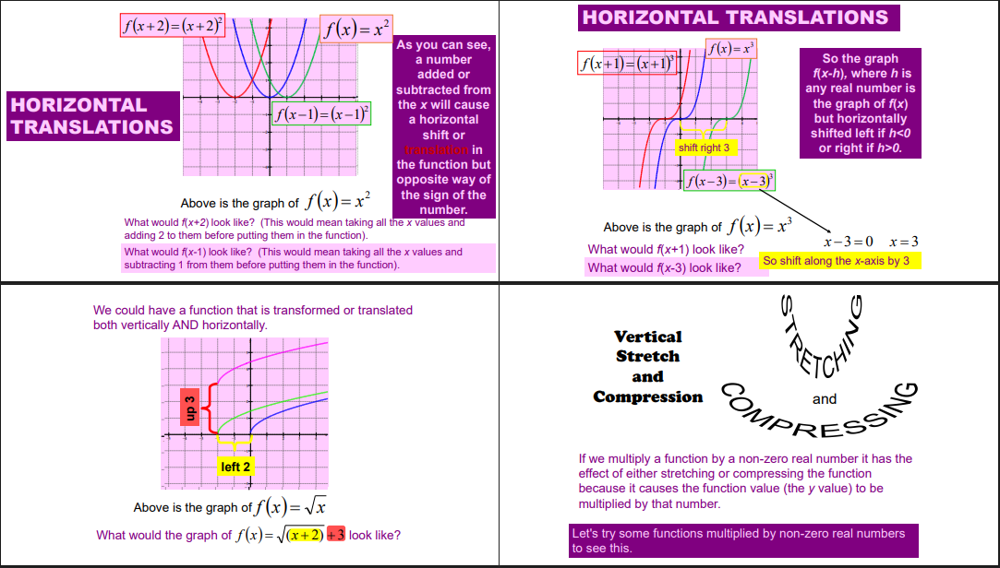
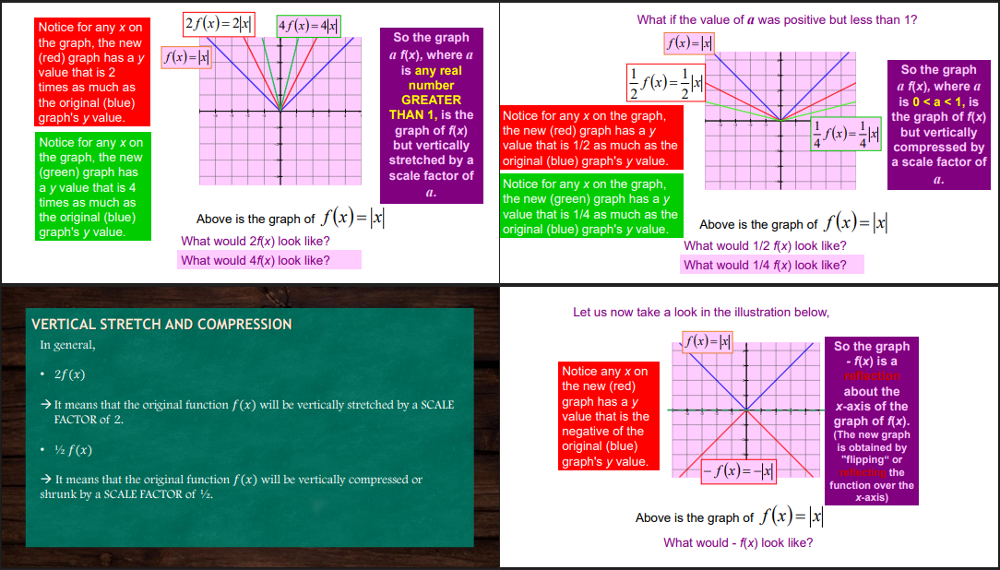
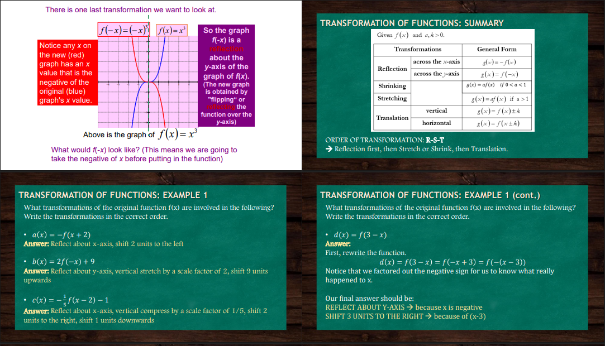
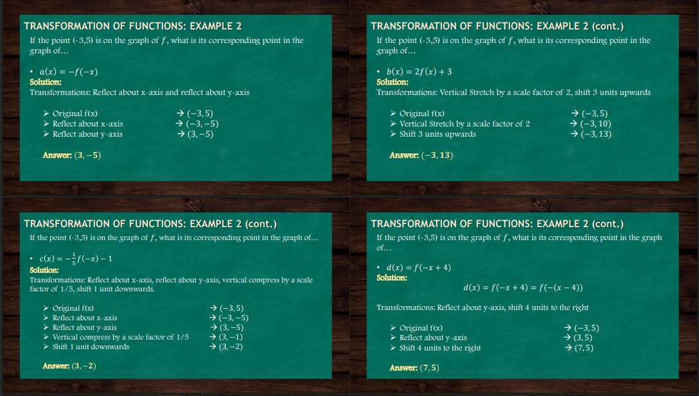
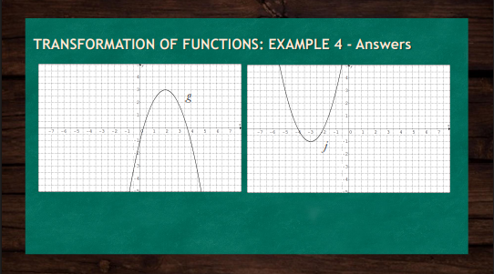

The slides explain the concept of transformation of functions, which refers to systematically changing a function’s graph by shifting, stretching, compressing, flipping, or combining it with other functions. This process allows us to adapt a base function to better model different real-life problems. The first part introduces the idea that when faced with a scenario, we often build mathematical models to explain or solve it. Transformations are tools that help us take a known function and modify it to create new ones that fit the problem we are analyzing. For this lesson, the focus is on three main types of transformations: Horizontal and Vertical Translation (shifting the graph left, right, up, or down) Vertical Stretch and Compression (making the graph narrower or wider) Reflection across the x-axis or y-axis. The bottom slides specifically demonstrate vertical translations. When you add or subtract a constant 𝑘 k to a function 𝑓(𝑥) f(x), the graph moves vertically. If 𝑘 k is positive, the graph shifts up; if 𝑘 k is negative, the graph shifts down. For example, the parabola 𝑓(𝑥)=𝑥2f(x)=x2 becomes 𝑓(𝑥)+1=x2+1f(x)+1=x2 +1, which shifts the graph up by 1 unit, or 𝑓(𝑥)−3=𝑥2−3f(x)−3=x2 −3, which shifts it down by 3 units. Similarly, the absolute value function𝑓(𝑥)=∣𝑥∣ f(x)=∣x∣ can be shifted:𝑓(𝑥)+2=∣𝑥l+2 f(x)+2=∣x∣+2 moves it upward by 2 units, while𝑓(𝑥)−4=∣𝑥l−4 f(x)−4=∣x∣−4 moves it downward by 4 units.
When a number is added to or subtracted from the variable inside the function, the graph shifts horizontally. If the number is added, the graph moves to the left, and if it is subtracted, the graph moves to the right. This is the opposite of what happens with vertical shifts, where the graph moves in the same direction as the sign of the number. For example, shifting left by a certain value means replacing the variable with that variable plus the value, while shifting right means replacing it with that variable minus the value. Functions can also be moved both vertically and horizontally at the same time. This means that the graph can shift left or right while also moving up or down. For instance, a square root graph can slide left while also moving upward, depending on the numbers added or subtracted both inside and outside the function. The slides also remind us about vertical stretch and compression. Multiplying a function by a number changes the steepness of the graph. If the number is large, the graph stretches upward and becomes narrower. If the number is between zero and one, the graph compresses and becomes wider. This happens because the values of the function are being multiplied, making them either larger or smaller. In short: Changing the input of a function by adding or subtracting shifts the graph left or right. Changing the output by multiplying stretches or compresses the graph. Both vertical and horizontal changes can happen together, creating combined transformations.
When we multiply a function by a number greater than one, the graph becomes taller or narrower because the values of the function increase faster. This is called a vertical stretch. On the other hand, if we multiply a function by a number between zero and one, the graph becomes shorter or wider since the values of the function decrease compared to the original. This is called a vertical compression. For example, if you imagine a “V”-shaped graph, stretching makes it rise more steeply, while compressing makes it open wider and less steep. The slides also show reflection across the x-axis. If you place a negative sign in front of the function, the graph is flipped upside down. Every positive value of the original graph becomes negative, so the entire graph mirrors itself over the x-axis. In summary: Multiplying the function by a large positive number stretches it vertically. Multiplying it by a small positive number (between zero and one) compresses it vertically. Multiplying it by a negative number flips it across the x-axis.
This image explains how different transformations affect the graph of a function, using examples and a summary chart. It highlights key transformations such as reflections (over the x- or y-axis), vertical stretches or compressions, and horizontal or vertical shifts. The top-left graph shows how the function 𝑓 ( 𝑥 ) = 𝑥 2 f(x)=x 2 changes under reflection, while the top-right provides a summary table of transformation rules. The bottom half walks through examples, showing how to identify and describe transformations like shifting left or right, stretching, and reflecting. The image emphasizes the correct order to apply transformations: reflections, stretches/shrinks, then translations.
In the first case, the function is reflected across both the x-axis and the y-axis. Reflection across the x-axis changes the vertical value, while reflection across the y-axis changes the horizontal value. After both reflections, the new point is three, negative five. In the second case, the function is stretched vertically and then shifted upward. A vertical stretch makes the vertical value larger, and shifting up moves the point higher. After applying these, the new point becomes negative three, thirteen. In the third case, the function is reflected across both axes, then compressed vertically by a fraction, and finally shifted downward. Reflection changes both the horizontal and vertical signs, vertical compression makes the vertical value smaller, and shifting downward reduces it further. The result is the point three, negative two. In the last case, the function is reflected across the y-axis and then shifted to the right. Reflection changes the horizontal value, and the shift moves it even further right. The final point is seven, five. In short, these examples show how reflections, stretches, compressions, and shifts directly affect the coordinates of specific points on the graph. Would you like me to make you a general step-by-step guide on how to transform any point for any type of transformation?

We start with the original function 𝑓(𝑥)=𝑥2−3f(x)=x2 −3. Several transformations are applied in different cases: Reflected across the x-axis and shifted 2 units to the right Reflection across the x-axis→ −𝑓(x)−f(x) Shift 2 units to the right → 𝑓(𝑥−2)f(x−2) Combining: 𝑔 (𝑥)=−𝑓 (𝑥−2)=−[(𝑥−2)2−3]=−(𝑥−2)2+3 g(x)=−f(x−2)[(x−2)2−3]=(x−2)2+3 Answer: 𝑔 (𝑥)=−(x−2)2+3g(x)=−(x−2)2+3 Vertically stretched by a factor of 4, shifted 𝑚 m units down and 𝑝 p units to the left Vertical stretch by 4 → 4𝑓(𝑥)4f(x) Shift 𝑚 m units down → subtract 𝑚 m Shift 𝑝 p units left → 𝑓(𝑥+𝑝)f(x+p) Combining: 𝑔(𝑥)=4𝑓(𝑥+𝑝−𝑚=4[(𝑥+𝑝)2−3]−𝑚=4(𝑥+𝑝)2−12−𝑚 g(x)=4f(x+p−m=4[(x+pm Answer:𝑔(𝑥)=4(𝑥+𝑝)2−12−𝑚g(x)=m Reflected across the y-axis, vertically shrunk by a factor of 1331 , and shifted 1 unit up Reflection across y-axis → 𝑓(−𝑥)f(−x) Vertical shrink by 1 331 → 13𝑓(𝑥)31 f(x) Shift up by 1 → add 1 Combining: 𝑔(𝑥)=13𝑓(−𝑥)+1=13((−𝑥−3)+1=13(𝑥2−3)+1=13𝑥2 Answer: 𝑔 (𝑥=3𝑥2g(x)=31x2 Example 4 This example uses a graph of 𝑓 f and asks to determine the graphs of transformed functions: 𝑔(𝑥)=−𝑓(𝑥)+2g(x)=−f(x)+2 Reflect across the x axis→−𝑓(𝑥)−f(x) Shift up by2→−𝑓(𝑥)+2−f(x)+2𝑗(𝑥)=𝑓(−(x+1)) j(x)=f(−(x+1)) The negative inside means reflect about the y-axis. The (𝑥+1) (x+1) means shift the graph 1 unit to the left. Thus, transformations are described step by step: For 𝑔(𝑥) g(x): reflection across x-axis, then 2 units upward. For 𝑗(𝑥) j(x): reflection across y-axis, then 1 unit left.
On the left, the graph has been reflected across the x-axis and then shifted upward. This creates a new graph that is an upside-down version of the original, raised above its previous position. On the right, the graph has been reflected across the y-axis and then shifted to the left. This makes the graph appear as a mirror image of the original across the y-axis but also moved sideways. In both cases, the slide confirms the results of the transformations step by step: reflection first, then either vertical or horizontal shifting, leading to the final graphs shown. Would you like me to create a full summarized study sheet that combines all the transformations (vertical, horizontal, stretches, compressions, and reflections) into one organized explanation for easier review?